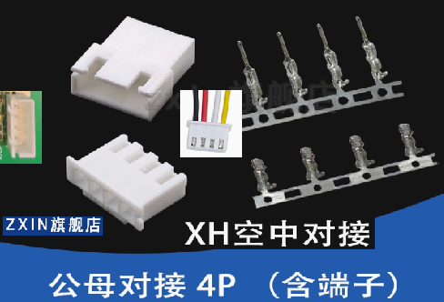
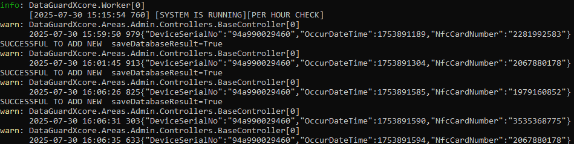
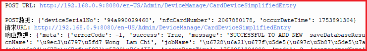
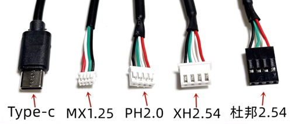
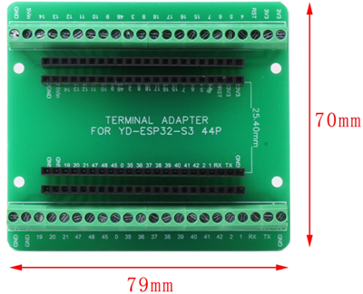

PROJECT - WIFI AND AP LCD1602 TESTING
ESP32_S3_WROOM1_BASE
ESP32_S3_WROOM1_BASE ：ESP32-S3-WROOM-1 / ESP32-S3-DEV-KIT-N16R8-M(16MB flash) 的基礎功能：WIFI/AP/NFC/LCD
底板
ESP32-S3-WROOM-1系列模組
ESP32-S3-DEV-KIT-N16R8-M【16MB flash】

http://www.waveshare.net/wiki/ESP32-S3-DEV-KIT-N16R8-M
WIFI 連接資源
1{2"ssid":"TP-Link_C878",3"password":"Lxxxxxxx6"4}5{6"ssid":"WiFi001",7"password":"abc12345"8}9{10"ssid":"WIFI77A",11"password":"Lxxxxxxx6"12}
功能描述
自動連接wi-fi,如果重連多次失敗則啟動AP熱點配置，提交 WIFI-SSID 和 WIFI-PASSWORD, 保存wifi_config.json 重啟再連WIFI
LCD螢幕：提示WIFI STATUS and AP STATUS
COMX選擇
如果您以開發為目的，選擇合適的介面可以提高調試和開發效率。以下是一些建議：
選擇 JTAG 介面：
如果您需要進行深入的偵錯，可以選擇 USB JTAG/Serial debug unit @ COM8。 JTAG 介面適合更複雜的偵錯操作。
選擇序列介面：
如果您只是想上傳 MicroPython 程式碼並進行基本的串行通信，可以選擇 MicroPython (ESP32) @ COM7 或 MicroPython (ESP32) @ COM8。這通常是開發過程中最常使用的介面。
同時使用：
在某些情況下，您可以同時使用串行和 JTAG 接口，進行程式碼上傳和調試。確保在 Thonny 或其他 IDE 中正確配置和切換。
實踐步驟
檢查連接：確保 ESP32 正確連接到電腦。
檢視裝置管理員：確認 COM 連接埠號碼。
在 Thonny 中選擇介面：根據上面的建議選擇相應的介面進行開發。
根據您的特定需求，選擇合適的介面可以提高開發效率
立創開發板：同一ESP32-S3晶片的另一個版本底板參考： https://wiki.lckfb.com/zh-hans/szpi-esp32s3/beginner/introduction.html
默认配置
xxxxxxxxxx21wifi_config.json 預設配置內容2{"ssid": "WiFi001", "password": "abc12345", "url_scheme": "http", "url_host": "192.168.0.9","url_host_port": 8080}
Tip
如果使用AP WIFI熱點配置比較麻煩，可以直接使用 複製 wifi_config.json文件到閃存，直接配置。
AP熱點配置
xxxxxxxxxx31WIFI NAME: DataGuardEsp PASSWORD: 123456782代碼：3self.ap.ifconfig(('192.168.4.1', '255.255.255.0', '192.168.4.1', '192.168.4.1'))

如果沒有顯示AP熱點名稱，可以直接輸入熱點名稱WIFI NAME: DataGuardEsp PASSWORD: 12345678
然後開啟網頁設定 http://192.168.4.1
你有300秒的時間連接AP和設置，300秒後重啟WIFI連接嘗試後，由於硬件資源不足，無法連接AP。
頁面無法打開：1、注意是不是超時 2、WIFI處於重連
請求正常
Handling root request Connection from ('192.168.4.2', 54730) request_str GET / HTTP/1.1 Host: 192.168.4.1 Connection: keep-alive Cache-Control: max-age=0 Upgrade-Insecure-Requests: 1 User-Agent: Mozilla/5.0 (Windows NT 10.0; Win64; x64) AppleWebKit/537.36 (KHTML, like Gecko) Chrome/138.0.0.0 Safari/537.36 Accept: text/html,application/xhtml+xml,application/xml;q=0.9,image/avif,image/webp,image/apng,/;q=0.8,application/signed-exchange;v=b3;q=0.7 Accept-Encoding: gzip, deflate Accept-Language: zh-TW,zh-HK;q=0.9,zh;q=0.8,en-US;q=0.7,en;q=0.6
時間設置
同步當前時間是GMT時間(格林威治時間)，也就是非北京香港當地時間。提取顯示和拍卡的時間是加上+8:00小時，不影響實際的當地時間的表示。
螢幕LCD1602
xxxxxxxxxx71ESP32-S22資料路徑：www.waveshare.net/wiki/LCD1602_I2C_Module3下載資料：4powershell5iwr "https://www.waveshare.net/w/upload/d/db/LCD1602_I2C_Module_code.zip" -OutFile "LCD1602_I2C_Module_code.zip"6linux7wget https://www.waveshare.net/w/upload/d/db/LCD1602_I2C_Module_code.zip
ESP32-S3-WROOM-1 版本在 ： D:\EPS32\LCD1602\ESP32-S3-DRV
硬體LCD1602連接ESP32-S3-WROOM-1
接線說明：一般來說，連接LCD1602透過I2C的方式如下：
VCC: 連接到3.3V或5V（3V3 Revised@2025-7-16）。
GND: 連接到接地線（GND Revised@2025-7-16）。
SDA: 連接到微控制器的SDA接腳（ GP4 Revised@2025-7-16）。
SCL: 連接到微控制器的SCL接腳（GP5 Revised@2025-7-16）。

LCD1602範例程序
『`python
範例程式下載
xxxxxxxxxx81cd ~2wget https://www.waveshare.net/w/upload/d/db/LCD1602_I2C_Module_code.zip3unzip LCD1602_I2C_Module_code.zip4cd ~/LCD1602_I2C_Module_code/Raspberry5sudo chmod 777 *6cd python/7sudo python test.py #在LCD上顯示兩行字元的程式8sudo python time_test.py #自動取得本機時間並顯示在LCD上的程序
x1- 程式碼解析2test.py4『`python6lcd.setCursor(0, 0) #設定遊標位置7# print the number of seconds since reset:8lcd.printout("Waveshare") #寫入字符9lcd.setCursor(0, 1) #設定遊標位置到第二行第零列10lcd.printout("Hello,World!")#寫入字符
WIFI LED 信號燈
WIFI 功能指示燈 ESP32管腳GP02 連接RGB燈管腳B：DEBUG狀態 10秒，生產環境 30秒
WIFI信號燈 功能與用法說明： ESP32-S2 LCD 使用引腳 PIN1#（GP02） 正常：每30秒閃一秒
NFC拍卡 M4255
UART 接腳 – 串列通信
ESP32-S3 支援多個 UART（通用非同步收發器）接口，可與各種設備進行串行通訊。 ESP32 支援最多三個 UART 介面：UART0、UART1和UART2，取決於您使用的 ESP32 開發板型號。
與 I2C 和 SPI 一樣，這些 UART 可以對應到任何 GPIO 引腳，儘管它們在大多數主機板型號上都有預設引腳分配。
下表顯示了 ESP32-S3 的預設 UART0、UART1 和 UART2 RX 和 TX 引腳：
參考目前代碼： uart = UART(1, baudrate=9600, bits=8, parity=None, stop=1, rx=Pin(18), tx=Pin(17))
| UART連接埠 | 德州 | 接收 | 評論 |
|---|---|---|---|
| UART0 | GPIO 43 | GPIO 44 | 無法更改：意思應該是底板固定的GPIO |
| UART1（Now Use This） | GPIO 17 | GPIO 18 | 可以分配給其他GPIO |
| UART2 | — | — | 指派您選擇的任何引腳 |
UART 4芯接線
NFC拍卡 M4255 使用 XH2.54mm空中对接 公母插头端子4芯

NFC拍卡業務
硬件: 閔行科技 UART M4255 NFC
類 class UartM4255NfcModule:
函數 def uart_card_listen_and_return(self):
xxxxxxxxxx31def uart_card_listen_and_return(self):2插入 雲拍卡事件查詢 確切關係等等業務3插入 門禁開關業務
DEMO [ACS DEVICE（Access Control System Device).MP4]
1、後台Response請求：
http://localhost:8080/zh-HK/Admin/DeviceManage/CardDeviceSimplifiedEntry

2、ESP32提交和響應

Note
ESP32提交到響應以及提示燈等等，整個流程約需要3-5秒。具體涉及異步線程等等，如果連續多個間隔不足一秒，測試是通過的。大體排隊打卡，如果人數過於密集，可以增加多個單片機進行拍卡處理。具體場景需要進一步的負載測試。
拍卡指示燈
拍卡指示燈 G 管腳连 GPIO38 RGB_LED : G<—>GPIO038
tapping_card_led_pin = 38
WIFI信號燈
WIFI信號燈 RGB_LED GPIO02 winfi_led_pin = 2
拍卡後台回傳
接線與壓線
1. XH2.54端子壓線

2. 各種端子名稱

3. ESP32-S3 GPIO 擴展板

雲端Attendance Post API
拍卡事件，獲取NFC Card Number 以及當前時間 POST到雲端平台，
第一步、POST雲端之前，先登記設備和NFC CARDNUMBER 驗證設備是否登記： http://192.168.0.9:8080/zh-HK/Device/GetMainComBySerialNo/94a990029460
第二步、POST API 內容： api : en-US/Admin/DeviceManage/CardDeviceSimplifiedEntry 強制 {Language} = en-US
xxxxxxxxxx81Body Json PostData2{3"DeviceSerialNo": "94a990029460",4"OccurDateTime": 1628783438292,6"NfcCardNumber": "3991852973"8}
注意：目前使用的硬件是 昱闵科技 UART接口M4255 uart_m4255_module.py::func：：uart_card_listen_and_return
注意：http error: [Errno 104] ECONNRESET ：請求連接出錯，或者連接到localhost的低級錯誤。
Important
ESP32-S3提供的時間是本地時間，而非 GMT格式時間，例如 香港本地時間是 22:30 ，不能寫成 02:30 GMT+08:00
NTP同步成功，已转换为UTC+8时间: (2025, 7, 31, 3, 2, 54, 8, 90) # 格式：(年, 月, 日, 星期, 时, 分, 秒, 微秒)
Tip
屏幕中，[ * ] 表示WIFI網絡信號是否正常連接。
PCB文檔與畫圖
虛擬電路畫圖